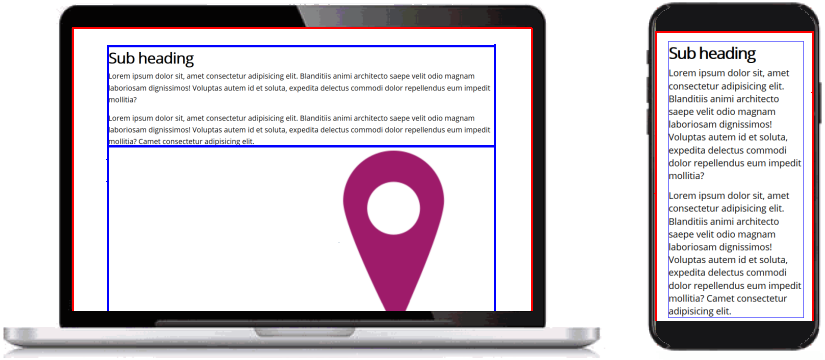
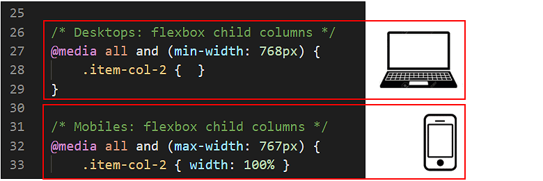
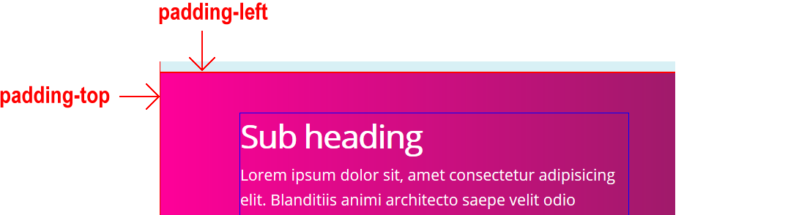
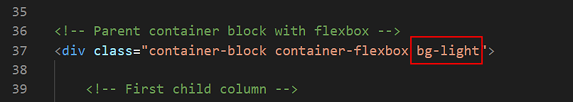
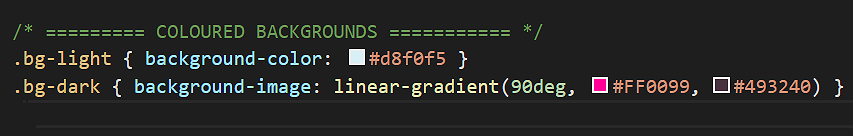
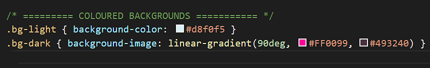
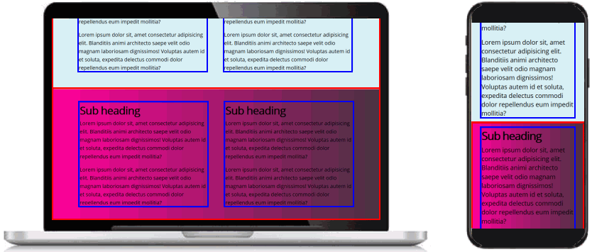
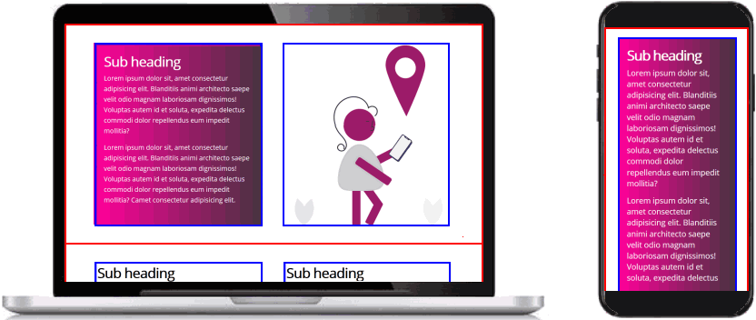

Learning Goals
At the end of this Tutorial you will be able to:
- Create and style responsive two-column layouts using CSS flexbox, with fluid text, images and coloured backgrounds.
You can view a finished version of the sample two-column web page you style in this Tutorial by clicking the link below. The finished sample page will open in a new tab of your web browser.
Your sample web pages and files
Your first step is to download the files you need for this Tutorial.
- Download the following compressed file to your computer:
https://www.munnelly.com/webdesign/exercises/flexbox-samples.zip
- Copy the ZIP file into your websites folder.
- Uncompress the ZIP file.
- The files will unzip into a sub-folder of your websites folder named flexbox-samples.
You should see 18 files: three HTML files, three CSS files and twelve image files.
flex-two-columns.html
flex-three-columns.html
flex-four-columns.html
flex-two-columns.css
flex-three-columns.css
flex-four-columns.css
directions.png
blackberry.jpg
cheesecake.jpg
pieceofcake.jpg
flower.jpg
heart.jpg
hook-head.jpg
sport-1.jpg
sport-2.jpg
sport-3.jpg
sport-4.jpg
- Copy all these files from the flexbox-samples sub-folder into your main websites folder.
You are now ready to work with the sample files you have downloaded.
Working with the two-column web page
In this Tutorial, you will work with the sample two-column web page, the sample two-column stylesheet, and two of the image files you have downloaded.
- In Visual Studio Code, open the following two files:
flex-two-columns.html
flex-two-columns.css
- Display the flex-two-columns.html web page in your browser. You can see that:
- Coloured borders have been added to highlight the edges of the parent elements (in red) and the child elements (in blue).
- All the content is positioned directly against the edges of the browser window.
That is because no padding (inside spacing) has been added to the container-block parent container elements.
- All the content is 100% wide, left-to-right, across the browser window.
That is because the item-col-2 child columns are defaulting to 100% width.
- In VS Code, display the flex-two-columns.css stylesheet.
You can see two empty styles for the .container-block selector. Each is inside a media query. The first query is for desktop/laptop screens; the second, for mobiles.

- Add the following padding properties and values to the two .container-block selectors.
@media all and (min-width:768px) { .container-block { padding: 4% 8% } }
@media all and (max-width:767px) { .container-block { padding: 11% 8% } }
- Save the flex-two-columns.css stylesheet and view the web page in your browser.

You should now see spacing inside the red-coloured borders of the three container-block parent elements.
Setting up the flexbox child columns
Your next task is to set the width of the .item-col-2 child columns to create your two-column layout on desktop and laptop screens.
- In VS Code, display the flex-two-columns.css stylesheet.
You can see that, for mobile screens, a width: 100% has been set for the .item-col-2 child column selector.
However, no width value has been set for .item-col-2 on desktop/laptop screens.

- To create a two-column layout on large screens, copy-and-paste the following.
@media all and (min-width:768px) {
.item-col-2 { width: 47% }
}
- Save the flex-two-columns.css stylesheet and view the web page in your browser.
As you can see, the child columns still occupy the full width of the screen on desktops/laptops.
Setting up the flexbox parent elements
For the web browser to display the item-col-2 child columns at your set width of 47%, you need to make their parent container, named container-flexbox, a flexbox element.
- In VS Code, you can see that a .container-flexbox selector has been created. But it contains no style rules.

- Copy-and-paste the following three flexbox-related property and value pairs.
.container-flexbox {
display: flex;
justify-content: space-between;
flex-wrap: wrap;
}
- Save the flex-two-columns.css stylesheet and view the web page in your browser.
Your child elements should now display correctly in a two-column layout on desktop/laptop screens.

Use your web browser’s screen resizing feature to confirm your layout displays as a single column on mobile-sized screens.
Adding coloured backgrounds
Next, you will add coloured backgrounds to your two-column layout: first, to a parent container and all its child columns; and then to an individual child column.
- Parent container: In your web page, your parent containers have two classes: container-block and container-flexbox.
When you add a coloured background to a parent element, the padding values of the container-block class will prevent the content inside the parent element from pushing directly against the edges of the parent.

So, when you add a coloured background to a parent container, you don’t also need to add any extra padding to that container.
- Child column: The item-2-col class that styles your child columns does not include any padding values.
So, to prevent the content inside a child element from pushing against its four edges, you will need to add to some padding values to the item-2-col class in your stylesheet file.

Adding coloured backgrounds to parent containers
Follow these steps to add coloured backgrounds to two of the three parent container elements in your web page.
- In VS Code, display the flex-two-columns.html web page.
- To the second parent element on (about) line 37 of your page, add the bg-light class.

- To the third parent element on (about) line 59 of the page, add the bg-dark class.
 The two background colour styles of bg-light (light blue) and bg-dark (purple, left-to-right gradient) are provided with the sample flex-two-columns.css stylesheet file.

The two background colour styles of bg-light (light blue) and bg-dark (purple, left-to-right gradient) are provided with the sample flex-two-columns.css stylesheet file.

- Save the flex-two-columns.html web page and view the result in your browser.
On desktop/laptop and on mobile-sized screens, your web page should now look as shown below.

Changing the text colours inside a parent element
For the <h3> sub-headings and <p> paragraphs inside the parent container with the bg-dark background, you need to change the colour of the text.
Note the two-levels of parent-child relationships here:
- The <h3> sub-headings and <p> text paragraphs are children of the item-col-2 columns.
- The item-col-2 columns are children of the parent containers with three classes: container-block, container-flexbox and bg-dark.
In your flex-two-columns.css stylesheet, your could ‘target’ the text content of the child columns by entering the following:
.container-block.container-flexbox.bg-dark .item-col-2 h3 { color: #fff }
.container-block.container-flexbox.bg-dark .item-col-2 p { color: #fff }
However, for this web page, it would be enough to type the following:
.container-block.bg-dark .item-col-2 h3 { color: #fff }
.container-block.bg-dark .item-col-2 p { color: #fff }
Or, alternatively:
.container-flexbox.bg-dark .item-col-2 h3 { color: #fff }
.container-flexbox.bg-dark .item-col-2 p { color: #fff }
Either will work.
But what if your later added to the item-col-2 child columns other text elements with different HTML tags – such as a <h1>, <h2> or <h4>?
The ideal solution is to use the universal or ‘wildcard’ CSS selector of * to target all text inside item-col-2 child columns – regardless of their particular HTML tag.
Here are the steps:
- In your flex-two-columns.css stylesheet, near the bottom, you should see the following comment line.
Add the following code under it:
.container-flexbox.bg-dark .item-col-2 * { color: #fff }
- Save the web page and view the result in your browser.
On desktop/laptop and on mobile-sized screens, your web page should now look as shown below.

Adding a coloured background to a child column
Next, you will add a background colour to a particular item-col-2 child column inside one of the three parent containers in your web page. Follow these steps.
- In the flex-two-columns.html web page, add the bg-dark class to the first item-col-2 child column inside the first parent container.

- Save the web page and view the result in your browser.

As you can see, you need to perform two more tasks:
- Change the colour of the sub-headings and text paragraphs inside the child column with the dark background.
- Add spacing inside the four edges of the child column.
Changing the text colours inside a child column
For the <h3> sub-headings and <p> paragraphs inside the child column with the bg-dark background, you need to change the colour of the text.
Here are the steps:
- In your flex-two-columns.css stylesheet, near the bottom, you have the following comment line and a CSS style rule that applies to all child columns whose parent containers have a class of bg-dark.
.container-flexbox.bg-dark .item-col-2 * { color: #fff }
- Update this by adding a new style rule that applies only when a child element has a class bg-dark.
.container-flexbox.bg-dark .item-col-2 * { color: #fff }
.container-flexbox .item-col-2.bg-dark * { color: #fff }
This new style rule with the ‘wildcard’ CSS selector of * will target all text inside item-col-2 child columns that have the bg-dark class – regardless of their particular HTML tag.
- Save the web page and view the result in your browser.
On desktop/laptop and on mobile-sized screens, your web page should now look as shown below.

You can see that you need to add some padding to the child column with the coloured background.
About child columns and padding
As general rule, you will always want to add padding to a child column that has a coloured background.
So it makes sense to develop a general solution that will work for all multi-column layouts – whether they have two, three, four or even more columns.
You can achieve this by following these two approaches:
- Use percentage padding values: Instead of entering fixed values (such as 20px) for padding, use percentage values (such as 2%) instead.
As a result, your three-column layouts will have a litle less padding than your two-columns ones, and your four-column layouts even less. This is generally what you will want.
- Use a wild card (*) with class names: In this Tutorial, you are working with two-column layouts where the child columns are styled with a class name of item-col-2.
In the CSS Flexbox: Three Column Layouts and CSS Flexbox: Four Column Layouts Tutorials, the child columns will have class names of item-col-3 and item-col-4.
By using class names with a consistent format, you can apply the wild card * character to create a universal CSS selector that styles all classes whose names include item-col-.
The next exercise provides an example of these two approaches in action.
Adding padding to a child column
In these next steps, you will apply padding to a particular child column of your layout.
- In your flex-two-columns.html web page, add the new class of item-col-padding to the child column that has a class of bg-dark.

- Save the web page and view the result in your browser. On desktop/laptop and on mobile-sized screens, your web page should now look as shown below.

The padding within the item-col-2 child columns is created by the following two styles in the flex-two-columns.css file.
 You need different padding values for desktops/laptop screens (displayed in landscape or 'sideways' mode) and mobile screens (typically displayed in portrait or 'upright' mode).
The padding-top values are slightly smaller than the padding-bottom values because the child columns begin with slightly larger text inside the <h3> tag and end with smaller text inside the <p> tag.
You need different padding values for desktops/laptop screens (displayed in landscape or 'sideways' mode) and mobile screens (typically displayed in portrait or 'upright' mode).
The padding-top values are slightly smaller than the padding-bottom values because the child columns begin with slightly larger text inside the <h3> tag and end with smaller text inside the <p> tag.
- Update the two styles for the item-col-padding selector in your stylesheet as follows.
@media all and (min-width:768px) {
[class*="item-col-"].item-col-padding { padding: 1.8% 2% 2.2% 2% }
}
@media all and (max-width:767px) {
[class*="item-col-"].item-col-padding { padding: 6.5% 7% 7% 7% }
}
These updated style rules will also apply to child columns with class names such as item-col-3 and item-col-4.
- Save your stylesheet file.
Adding a hero block
Finally, here is an example of a two-column flexbox layout used to create a so-called hero block.
- In VS Code, at the bottom of the flex-two-columns.html web page, copy-and-paste the following:
<div class="container-block container-flexbox bg-hero">
<div class="item-col-2">
<h1>Hook Head</h1>
<h2>Guiding ships <br>for 800 years.</h2>
</div>
</div>
Save your web page.
- In your stylesheet, copy-and-paste the following:
.bg-hero {
display: flex;
flex-direction: column;
justify-content: center;
background-image: url('hook-head.jpg');
background-position: center center;
background-size: cover;
background-repeat: no-repeat;
height: 510px;
}
.bg-hero h1, .bg-hero h2 {
letter-spacing: -2px;
color: #fff;
font-weight: bold;
text-shadow: 2px 2px #222
}
.bg-hero h1 {
font-size: calc(80px + (100 - 80) * ((100vw - 320px) /(1600 - 320)));
}
.bg-hero h2 {
font-size: calc(36px + (56 - 36) * ((100vw - 320px) /(1600 - 320)));
}
@media all and (min-width:768px) { .bg-hero h1 { margin-bottom: 1% } }
@media all and (max-width:767px) {
.bg-hero { background-position: right center; height: 420px }
.bg-hero h1, .bg-hero h2 { text-align: center }
.bg-hero h1 { margin-bottom: 10% }
}
- Save the stylesheet and view the web page in your web browser.
On desktop/laptop and on mobile-sized screens, your web page should now look as shown below.
Click flex-two-columns.html to view a finished sample of this web page in a new tab of your web browser.
You can now remove from your stylesheet the two styles of red borders around parent containers and blue borders around child elements.
Uploading your files to GitHub
After finishing your web pages and stylesheets, you are now ready to upload them to your account on GitHub.
- Open a new tab in your web browser and go to GitHub.com. If you are not already signed in to your GitHub account, sign in now.
- Select or drag-and-drop the following files to upload them to your GitHub account:
flex-two-columns.html
flex-two-columns.css
directions.png
hook-head.jpg
- Finally, scroll down to the bottom of the GitHub screen, enter a short message in the Commit changes box and click the Commit changes button.
Your web pages and stylesheets are now published on GitHub at web addresses similar to the following, where username is the username you have chosen for your GitHub account:
https://username.github.io/flex-two-columns.html
It may take a few minutes for your uploaded files to appear on GitHub.
Return to Contents.